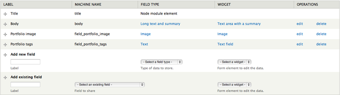

Overview
A minimalistic Drupal 7 theme powered by Zurb Foundation 3 and Font Awesome. Haiku features a fully responsive design, easy to use theme settings and follows Drupal coding standards. For theme support that cannot be found in this documentation, please visit our support forum. Once you have registered please contact us via the ThemeForest author page with your forum username so you can be granted posting rights.
Updated: 01/15/13
Author: Refaktor
Email: refaktor.co@gmail.com
Docs powered by: TOC
Installation
There are several ways Haiku can be installed. For existing sites that already have content, the first method will only involve the installation and activation of the theme. The second option includes a full Drupal 7 install with the same SQL database file used to create the theme demo. Please choose which installation method works best for you and follow the instructions.
Theme Only
Option 1:- Visit yourdomain.com/admin/appearance/install
- Upload the Haiku.zip file
- Enable and set to default
- Extract the Haiku.zip file and upload via FTP to /sites/all/themes
- Visit yourdomain.com/admin/appearance/
- Scroll down to "DISABLED THEMES" and set and enable Haiku
Full Drupal Install
The following steps are designed for people that have experience manually installing Drupal and importing databases. If you do not feel comfortable performing these steps yourself, contact your server administrator for help. NOTE this option is for a completely new Drupal install. Do not import the provided SQL file into an existing Drupal database or you will lose all of your data!
- Create a database for this installation of Drupal and import the SQL file that came with the theme.
- Follow these directions to create the settings.php file. Save this file somewhere so you can copy it over to the Drupal installation we have provided.
- Copy the entire contents of the Drupal_7 folder to the location on your web server where you want your site to be accessed. If you want your primary domain to point to your install of Haiku, copy everything to the root folder. If you want your site to be accessed as a subsection of your domain (for example: yourdomain.com/drupal) then simply rename the Drupal_7 folder to the desired name and upload to the root of your server. Also be sure to copy over the settings.php file mentioned in the previous step
- Login to your site with the username Steve and the password admin and visit /admin/people to change the admin username and password. The passwords for the three test users are the username and 1234, example: Frank1234
- Go through the Drupal configuration found in /admin/config options and update all the necessary information to reflect your website. Also be sure to visit /admin/config/media/file-system and change the Temporary Directory.
Menu
To edit your menu visit yourdomain.com/admin/structure/menu (pictured below)

Haiku uses the Main Menu. Press "List Links" to access the menu overview. From there you can add/remove links, and set the order.
NOTE:If you would like to use Haiku's built in drop down menu capability, make sure that the parent menu item (the one that indicates the drop down) has the "show as expanded" checkbox enabled.

To customize the styling of the menu you can edit the /css/style.css file and the /js/haiku.js file. The short caption below each menu item is generated with Javascript using the following markup (simply change .menu_1 to whichever menu item you need to add a caption for:
$('.menu_1 a').append('<p class="menu_tagline">the beginning</p>');
Theme Settings
Haiku includes a powerful set of theme settings that allow you to configure many aspects of your site. They are organized in a series of tabbed menu items each with their own set of options. Simply click on the option heading to expand the full set of options. The Haiku theme options can be accessed by visiting yourdomain.com/admin/appearance/settings/haiku. All options have default values set, but you should go through each one and adjust them to your liking.
Front Page
By default Haiku uses a custom front page template that features several custom sections including the image slider. All of these sections are fully customizable and can also be disabled. You can use the theme settings to enable/disable any of these sections and set any necessary options. For full control of the front page template you can manually edit /includes/front-page.php
Image Slider
Haiku uses the Orbit slider built into foundation for the main image slider. We have provided some simple theme settings to control the slider, or you can manually edit /includes/front-page.php to fully customize the slider. You can set up as many slides as you like which support captions with HTML.
Highlight
The Highlight section allows you to advertise a specific page or aspect of your site. The settings for the Highlight section are in the Front Page tab of the theme settings. You can enter your own text and even include HTML.
Services
This is a full-width portion on the front page designed to showcase site services and link to various pages on your site. To add content to this section either add a block to the Front Page Services block region or edit /templates/page--front.tpl. The code used for the content seen on the demo can be found in /examples/front-page-services.php.Information
This is a full-width portion on the front page designed to display more detailed information about the website. To add content to this section either add a block to the Front Page Information block region or edit /templates/page--front.tpl. The code used for the content seen on the demo can be found in /examples/front-page-information.php.Recent Posts
The recent posts section is a block region designed to showcase your site's most recent blog/article posts. Haiku uses a custom view template called node--view--front-page-blog--block.tpl to achieve the look and feel of this section seen on the demo. To properly use this section, either create a new view called Front Page Blog (machine name must be front_page_blog) with the desired number of blog/article teasers, or use the view export code found in /includes/view_exports/front-page-blog.txt
Recent Projects
The recent projects section is designed to showcase recent portfolio items in a carousel (see the Portfolio section of these docs for instructions on how to set up your portfolio items). This section utilizes a custom view template called node--view--recent-projects--block.tpl to achieve the look and feel seen on the demo. To properly use this section, make sure you have set up some portfolio items as described in the "Portfolio" section of the documentation. Once you have some portfolio items, either create a new view called Recent Projects (machine name must be recent_projects) with the number of portfolio items desired. To import the view used on the demo use the export code found in /includes/views_exports/recent-projects.txt
Clients
This is a full-width portion on the front page designed to showcase a series of clients in a carousel. To add content to this section either add a block to the Front Page Clients block region or edit /templates/page--front.tpl. The code used for the content seen on the demo can be found in /examples/front-page-clients.php.Widgets
Haiku includes styling and code for several widgets such as the faq, Twitter feed and quote rotator. See below for the necessary markup to use each kind of widget in a block or page
<div class='tweet query'></div>
<script type="text/javascript">
jQuery(document).ready(function ($) {
$(".tweet").tweet({
username: "envato",
avatar_size: 34,
count: 3,
loading_text: "loading tweets..."
});
});
</script>
FAQ
<ul class="faq">
<li class="divider"><h2 class="faq-head title-color gdl-title"><span class="faq-head-image active"></span>Title</h2>
<div class="faq-content">
faq Text
</div>
</li>
<li class="divider"><h2 class="faq-head title-color gdl-title"><span class="faq-head-image active"></span>Title</h2>
<div class="faq-content">
faq Text
</div>
</li>
</ul>
Ad Block
<div class="ad_block"> <a href="#">125 by 125</a><a href="#">125 by 125</a><a href="#">125 by 125</a><a href="#">125 by 125</a> </div>
Popular Tags
Use the Views module to create a block view titled "Popular Tags" that is an HTML list of the taxonomy term "Tags". You can set the number limit to whatever you like, just make sure to name it "Popular Tags" and to make it an HTML list.Flickr
Here is the JS and HTML markup for the Flickr Feed widget seen on the demo. For more information visit the plugin page here.
$('#flickr_widget').jflickrfeed({
limit: 6,
qstrings: {
id: '39415781@N06'
},
itemTemplate: '<li><a href="{{image_b}}"><img src="{{image_s}}" alt="{{title}}" /></a></li>'
});
<ul id="flickr_widget" class="thumbs"></ul>
Rotating Quotes/Testimonials
Here is the JS and HTML markup for the rotating customer testimonials seen on the front page of the demo (uses jquery.quote_rotator.js):
$('ul#quotes').quote_rotator();
<ul id="quotes">
<li>
<p>Quote text goes here</p>
- John Doe
</li>
<li>
<p>Here's another quote</p>
- John Doe
</li>
</ul>
Portfolio
This portion of the docs will explain how to set up the portfolio page seen on the theme demo. The only module you will need is the Views module which is needed to create the list of portfolio items.
Custom content type
The first step is to create a new content type called Portfolio Item. To create a new content type visit /admin/structure/types and click "add content type". Title the new content type "Portfolio Item" (this is important), enter a brief description and save.
Next you have to add two custom fields to this content type for the portfolio image and description tags. Press the "manage fields" link under Portfolio Item in the content type overview page and use the "Add new field" option. Enter "Portfolio image" in the label field and select "Image" as the field type. Press save when you are done, and you will now have an image uploader when creating a Portfolio item. Do the same thing again, only this time use "Portfolio tags" as the label and "Text" as the field type. This field lets you add short tag words like "design" and "branding" to your portfolio items which are used to group sets of items together for use with the filter buttons seen on the demo. Here is what the fields for the "Portfolio Items" content type should look like when you are done:
Creating a portfolio item is as simple as creating any other content type. Visit /admin/content, click "Add content" and select the new Portfolio Item type you just created. Enter the title, text, upload your image and add your tag or tags (only put a space between each tag, no commas) and press save.
Portfolio View
To create a Portfolio page to display all of your portfolio items as seen on our demo, you will need to use the Views module. Once you have installed the module, visit /admin/structure/views and click "Add new view". Enter "Portfolio" into the view name text field, select Portfolio Item as the content type to pull from, make sure "create page" is checked off to make this a page view and tell it to pull an unformated list of full posts. You should also have it create a Menu link, but you can also do this later using the Menu options. You can also use the code found in /includes/views_exports/portfolio.txt to import the view. Below is what your view should look like when you're done:

The final step to completing your portfolio page is to open /templates/page--portfolio.tpl and edit the Isotope filters. Isotope is the jQuery library which easily allows you to group and switch between those groups of portfolio items as seen on the demo. The filters are a simple unordered list of HTML links with a data-option-value for each portfolio tag. You can see from the default values in the template that this will filter the portfolio items by all, photography, design and marketing. Just add a filter item for each of the tags you use for your portfolio items for optimum use. Note a future update to the theme will dynamically generate the portfolio item filters. For more information about what you can do with Isotope visit the official page here.
Blog
If you plan to have a blog on your site, be sure to read through this portion of the documentation which outlines a couple things to keep in mind. The theme uses a custom page template called page--blog.tpl which is designed to be used with a page titled Blog. If you plan on using a blog with Haiku, it is recommended that your blog page be called "blog" or that you rename this template file accordingly. There is a theme setting which allows you to have a sidebar on the right-hand side of the blog page, or to have it be full width with no sidebar.
Haiku also comes equipped with the functionality to use a simple image slider within the post (as seen on our demo). To make use of this feature, simply add a new image field to the article content type called second image (machine name: field_second_image). Then simply add a second image to the posts where you want to use the image slider and the theme will take care of the rest. If you want to use more than two images, simply add more image fields and update the /templates/node--article.tpl file in between the div class "featured" starting at line 29. If you look at the template you will see that it calls field_image and field_second_image between the div. Just add the necessary calls to each extra image field you've created.
Footer
Haiku's footer is split up into two parts so we will discuss each one separately. The main footer is split up into 4 block regions which can be used to display any information you want. There is also an optional social icons section in the area where the first block region is placed. If you would like to display the social icons, use the icons heading in the Footer options to select the ones you want to display and enter the necessary URLS. Or you can place a block into the Footer 1 block region to remove the icons and use your own content.
The secondary footer has a full width block region that can be used, or you can use the text option in the theme settings. By default it displays a credit link but you can change this to whatever you like by either using the option or by using the Footer Full Width block region.
You can also hide either of the footer regions by using the theme settings.
Block Regions
Haiku features 14 block regions where you can add your own custom content. Visit yourdomain.com/admin/structure/block to add your own content to the defined block regions. Press "Add Block" to create a new custom blog, or select an existing block from the Disabled list below the defined block regions.
Thank You
Thank you very much for purchasing the Haiku responsive Drupal 7 theme. Once again if you have any issues or feedback please connect via the ThemeForest author page. Enjoy using Haiku!
© 2012 Refaktor.